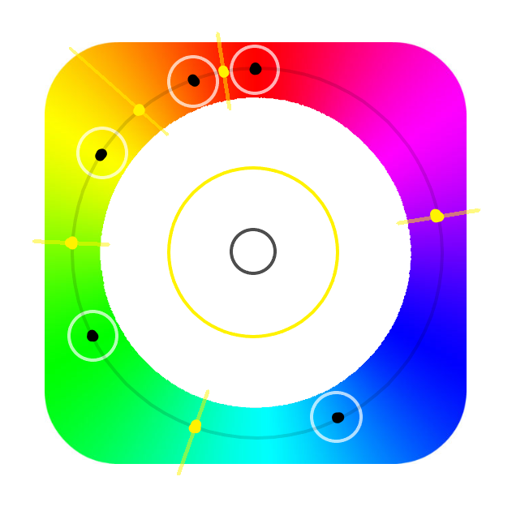

開始製作顏色辨識時，遇到了兩個問題：
1.如何感應色彩，並且在不同光源也能正確感應
我先上網搜尋如何讀取像素色彩：
hsv = cv2.cvtColor(Shooting_images,cv2.COLOR_BGR2HSV) px = hsv[x, y] # 接著就可以用px[0], px[1], px[2]來讀取像素的Hue, Saturation, Value
接下來要如何指定要讀取的像素？我決定用點擊的方式。
# in main program
cv2.setMouseCallback('image',color_detect)
# define new method
def color_detect(event,x,y,flags,param):
if event == 1:
hsv = cv2.cvtColor(Shooting_images,cv2.COLOR_BGR2HSV)
px = hsv[y, x]
在這裡寫hsv[y, x]而不是hsv[x, y]，是我在試驗後的結果。我不確定確切原因為何，但好像要將x跟y倒過來才能正確讀取。
關於如何「辨識」點擊到的顏色，我是用這種方法：
先點擊螢幕上的紅、橘、黃、綠、藍和白（結果為圖中的圓圈和黑點部分）。
接著取兩個黑點的中間值（黃點），形成顏色的範圍。只要讀取到的Hue在某兩個黃點中間，就會自動偵測為中間黑點的顏色。
至於白色，我只偵測他的Saturation（彩度），並在偵測後給予較寬的範圍好容納誤差（中間黃色圈）。
2.如何開啟兩個攝影機
webcam = cv2.VideoCapture(2) webcam.release() webcam = cv2.VideoCapture(1)
接下來需要克服的是，兩個攝影機的亮度可能不同，需不需要重新校正。